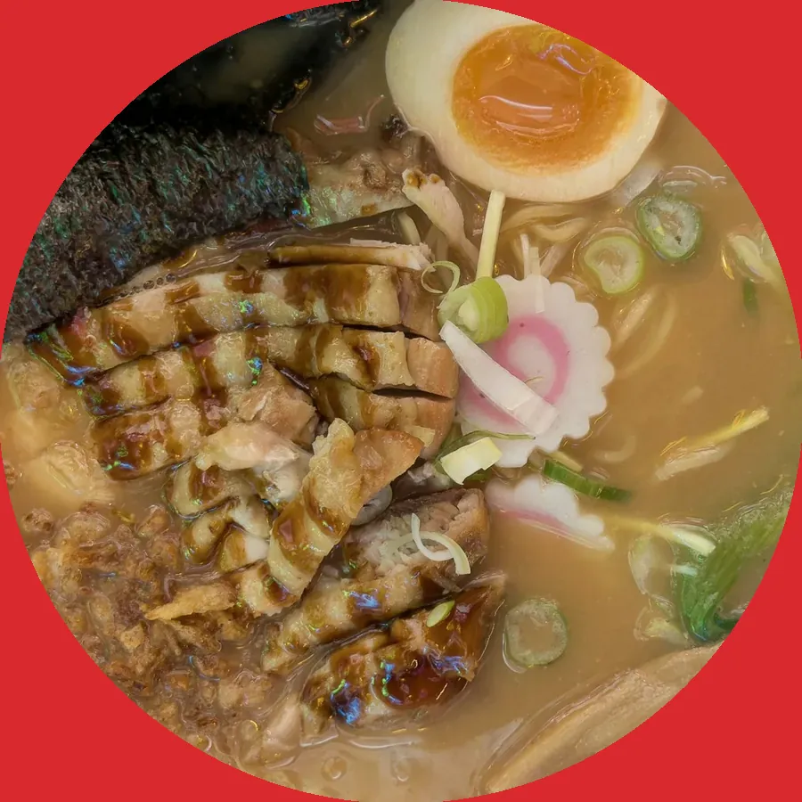
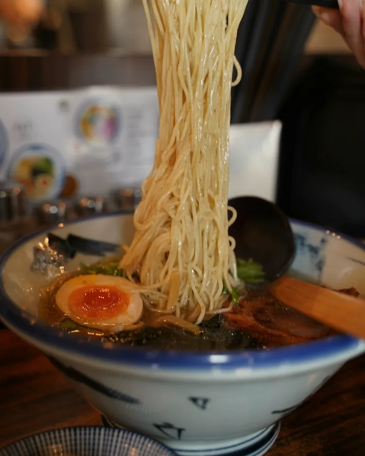
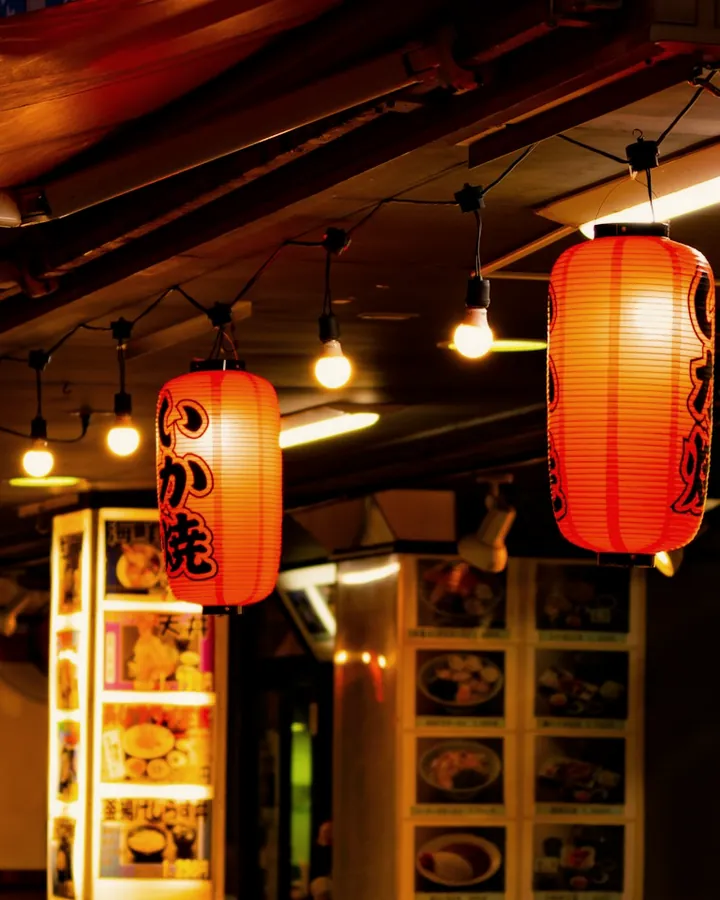
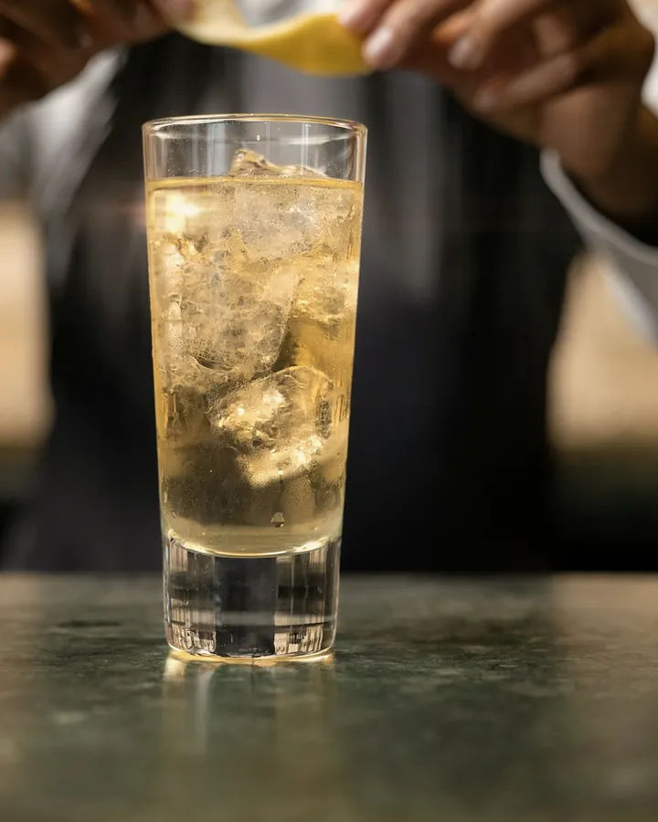
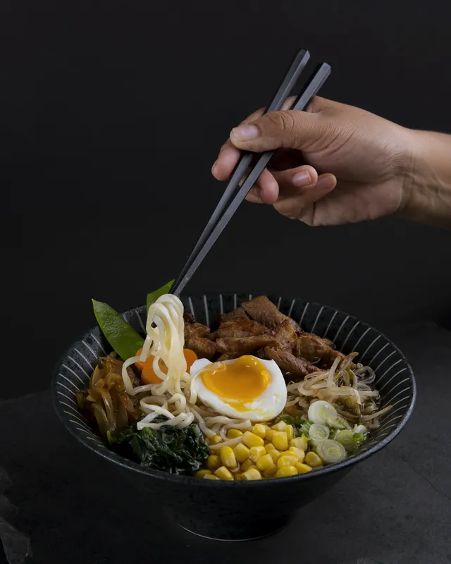
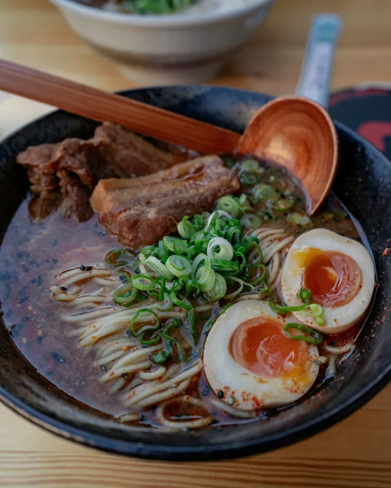
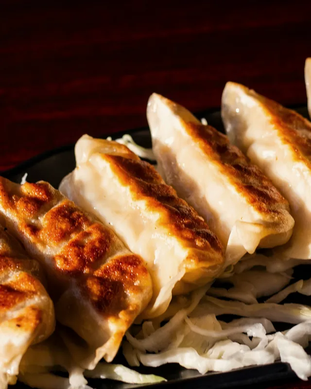
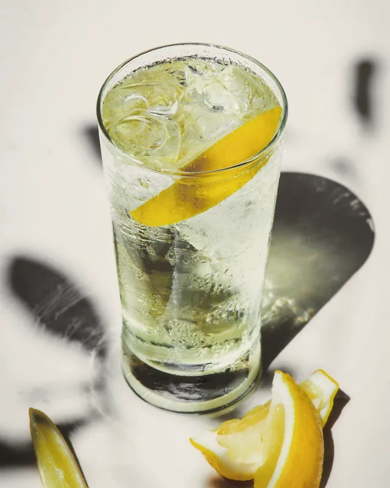
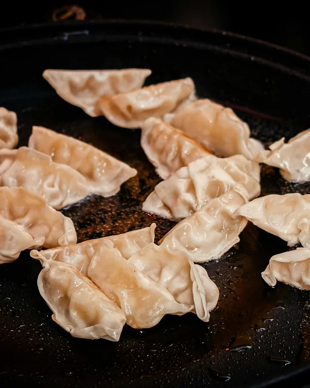

Ramen &
highball
Caldo de doce horas, fideos con mordida, gyozas a la plancha y highballs bien fríos. Barra hasta tarde en el Centro.

Calle San Marcial 21 · CentroMar a dom · vie y sáb hasta las 2:00Ramen desde 13 €
La carta
Ramen, gyozas y highball
Ramen
- TonkotsuCaldo de cerdo de 12 horas, chashu y huevo marinado14 €
- ShoyuCaldo de pollo y soja, bambú y cebolleta13 €
- Miso picanteCarne picada, maíz y aceite de chile14 €
- SetasVegano: caldo de kombu y shiitake13 €
Para picar
- Gyozas a la planchaSeis unidades7 €
- KaraagePollo frito con mayonesa japonesa8 €
- EdamameCon sal en escamas5 €
- TakoyakiBolitas de pulpo, seis unidades7 €
Highballs y más
- Highball clásicoWhisky y soda6 €
- Yuzu highball7 €
- Shiso highball7 €
- Cerveza japonesa4 €
- Ramune3,50 €
Postre
- Mochi heladoDos unidades5 €
Carta de ejemplo: en tu web, tu carta y tus precios.
La casa
Caldo de doce horas, barra hasta tarde
El caldo se pone a primera hora y no se toca hasta la noche. Fideos con mordida, huevo marinado de un día para otro y highballs servidos con hielo de bloque. Barra corta, cocina a la vista y música alta los viernes.
- Ramen desde 13 €
- Highball · 6 €
- Vie y sáb hasta las 2:00


Para llevar
Ramen para llevar
Te lo damos con el caldo aparte para que llegue perfecto a casa. Escríbenos y dinos a qué hora pasas.
EscríbenosQué quieres y a qué hora pasas.
Lo preparamosCaldo aparte, fideos al punto.
RecógeloEn la barra, sin cola.

Galería
Vapor y neón





Fotos de Unsplash
Horario
Cuándo venir
Mar a dom · vie y sáb hasta las 2:00
| Lunes | Cerrado |
|---|---|
| Martes | 13:00–16:00 · 20:00–00:00 |
| Miércoles | 13:00–16:00 · 20:00–00:00 |
| Jueves | 13:00–16:00 · 20:00–00:00 |
| Viernes | 13:00–16:00 · 20:00–02:00 |
| Sábado | 13:00–16:00 · 20:00–02:00 |
| Domingo | 13:00–16:00 · 20:00–23:30 |
Cómo llegar
En el Centro, calle San Marcial
Calle San Marcial 2120005 Donostia / San Sebastián
Al cargar el mapa, tu navegador se conecta con Google.
Texto de ejemplo: en tu web, cómo llegar a pie, en autobús o en coche desde tu barrio.